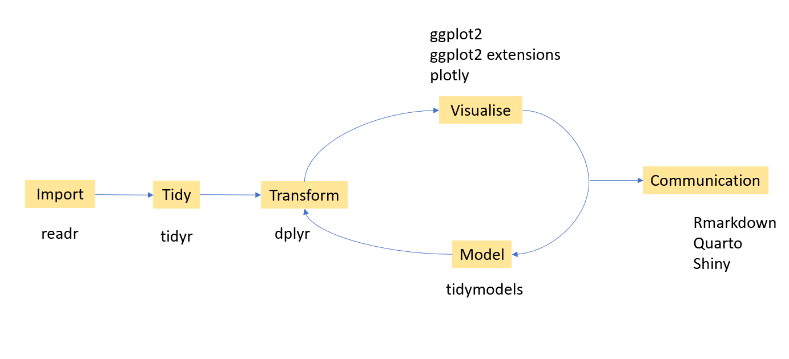
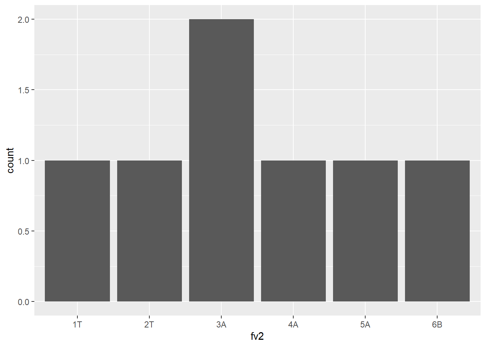
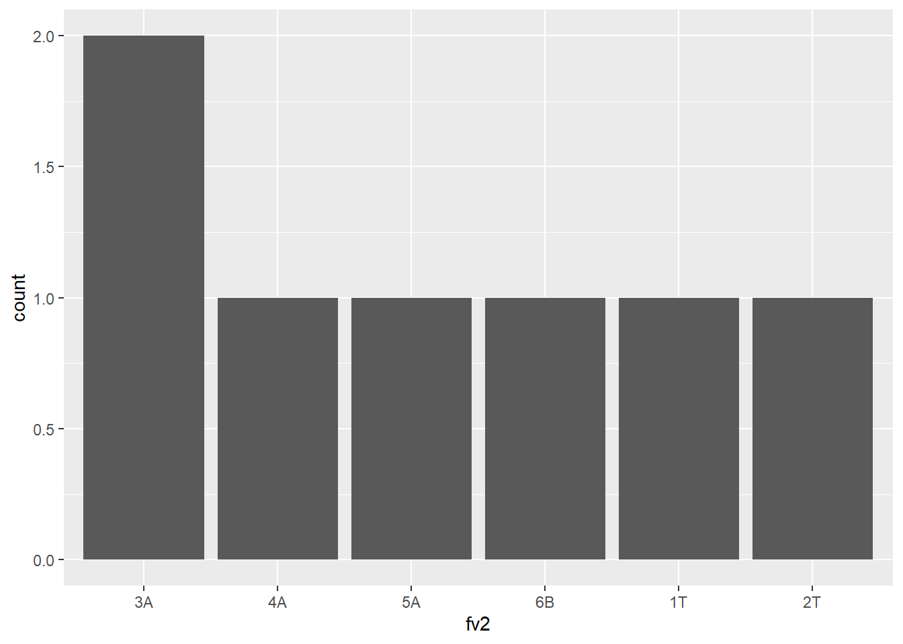
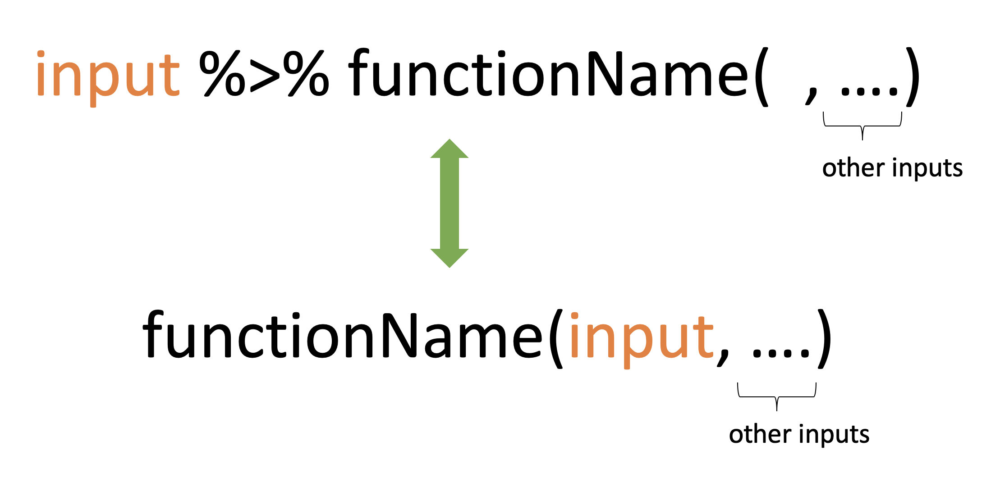

── Attaching core tidyverse packages ──────────────────────── tidyverse 2.0.0 ──
✔ dplyr 1.1.4 ✔ readr 2.1.5
✔ forcats 1.0.0 ✔ stringr 1.5.1
✔ ggplot2 3.5.2 ✔ tibble 3.3.0
✔ lubridate 1.9.4 ✔ tidyr 1.3.1
✔ purrr 1.1.0
── Conflicts ────────────────────────────────────────── tidyverse_conflicts() ──
✖ dplyr::filter() masks stats::filter()
✖ dplyr::lag() masks stats::lag()
ℹ Use the conflicted package (<http://conflicted.r-lib.org/>) to force all conflicts to become errors7 Introduction to Tidyverse
7.1 What is the tidyverse?
Collection of essential R packages for data science.
All packages share a common design philosophy, grammar, and data structures.
7.2 Setup
install.packages("tidyverse") # install tidyverse packages
library(tidyverse) # load tidyverse packages7.3 The Tidyverse data analysis workflow

7.4 Tibble
Tibble is a modern version of dataframes.
A modern re-imagining of data frames.
7.4.1 Create a tibble
library(tidyverse) # library(tibble)
first.tbl <- tibble(height = c(150, 200, 160), weight = c(45, 60, 51))
first.tbl# A tibble: 3 × 2
height weight
<dbl> <dbl>
1 150 45
2 200 60
3 160 51class(first.tbl)[1] "tbl_df" "tbl" "data.frame"7.4.2 Convert an existing dataframe to a tibble
as_tibble(iris)# A tibble: 150 × 5
Sepal.Length Sepal.Width Petal.Length Petal.Width Species
<dbl> <dbl> <dbl> <dbl> <fct>
1 5.1 3.5 1.4 0.2 setosa
2 4.9 3 1.4 0.2 setosa
3 4.7 3.2 1.3 0.2 setosa
4 4.6 3.1 1.5 0.2 setosa
5 5 3.6 1.4 0.2 setosa
6 5.4 3.9 1.7 0.4 setosa
7 4.6 3.4 1.4 0.3 setosa
8 5 3.4 1.5 0.2 setosa
9 4.4 2.9 1.4 0.2 setosa
10 4.9 3.1 1.5 0.1 setosa
# ℹ 140 more rows7.4.3 Convert a tibble to a dataframe
first.tbl <- tibble(height = c(150, 200, 160), weight = c(45, 60, 51))
class(first.tbl)[1] "tbl_df" "tbl" "data.frame"first.tbl.df <- as.data.frame(first.tbl)
class(first.tbl.df)[1] "data.frame"7.4.4 tibble vs data.frame
- The way they print output
tibble
first.tbl <- tibble(height = c(150, 200, 160), weight = c(45, 60, 51))
first.tbl# A tibble: 3 × 2
height weight
<dbl> <dbl>
1 150 45
2 200 60
3 160 51data.frame
dataframe <- data.frame(height = c(150, 200, 160), weight = c(45, 60, 51))
dataframe height weight
1 150 45
2 200 60
3 160 51- With tibble you can create new variables that are functions of existing variables.
tibble
first.tbl <- tibble(height = c(150, 200, 160), weight = c(45, 60, 51),
bmi = (weight)/height^2)
first.tbl# A tibble: 3 × 3
height weight bmi
<dbl> <dbl> <dbl>
1 150 45 0.002
2 200 60 0.0015
3 160 51 0.00199data.frame
df <- data.frame(height = c(150, 200, 160), weight = c(45, 60, 51),
bmi = (weight)/height^2) # Not workingYou will get an error message
Error in data.frame(height = c(150, 200, 160), weight = c(45, 60, 51), : object 'height' not found.
With data.frame this is how we should create a new variable from the existing columns.
df <- data.frame(height = c(150, 200, 160), weight = c(45, 60, 51))
df$bmi <- (df$weight)/(df$height^2)
df height weight bmi
1 150 45 0.002000000
2 200 60 0.001500000
3 160 51 0.001992188- In contrast to data frames, the variable names in tibbles can contain spaces.
Example 1
tbl <- tibble(`patient id` = c(1, 2, 3))
tbl# A tibble: 3 × 1
`patient id`
<dbl>
1 1
2 2
3 3df <- data.frame(`patient id` = c(1, 2, 3))
df patient.id
1 1
2 2
3 3- In contrast to data frames, the variable names in tibbles can start with a number.
tbl <- tibble(`1var` = c(1, 2, 3))
tbl# A tibble: 3 × 1
`1var`
<dbl>
1 1
2 2
3 3df <- data.frame(`1var` = c(1, 2, 3))
df X1var
1 1
2 2
3 3In general, tibbles do not change the names of input variables and do not use row names.
- A tibble can have columns that are lists.
tibble
tbl <- tibble (x = 1:3, y = list(1:3, 1:4, 1:10))
tbl# A tibble: 3 × 2
x y
<int> <list>
1 1 <int [3]>
2 2 <int [4]>
3 3 <int [10]>data.frame
This feature is not available in data.frame.
If we try to do this with a traditional data frame we get an error.
df <- data.frame(x = 1:3, y = list(1:3, 1:4, 1:10)) ## Not working, errorError in (function (..., row.names = NULL, check.rows = FALSE, check.names = TRUE, : arguments imply differing number of rows: 3, 4, 10
7.4.5 Subsetting: tibble vs data.frame
7.4.5.1 Subsetting single columns
data.frame
df <- data.frame(x = 1:3,
yz = c(10, 20, 30)); df x yz
1 1 10
2 2 20
3 3 30df[, "x"][1] 1 2 3df[, "x", drop=FALSE] x
1 1
2 2
3 3tibble
tbl <- tibble(x = 1:3,
yz = c(10, 20, 30)); tbl# A tibble: 3 × 2
x yz
<int> <dbl>
1 1 10
2 2 20
3 3 30tbl[, "x"]# A tibble: 3 × 1
x
<int>
1 1
2 2
3 3tbl <- tibble(x = 1:3,
yz = c(10, 20, 30))
tbl# A tibble: 3 × 2
x yz
<int> <dbl>
1 1 10
2 2 20
3 3 30tbl[, "x"]# A tibble: 3 × 1
x
<int>
1 1
2 2
3 3# Method 1
tbl[, "x", drop = TRUE][1] 1 2 3# Method 2
as.data.frame(tbl)[, "x"][1] 1 2 37.4.5.2 Subsetting single rows with the drop argument
data.frame
df[1, , drop = TRUE]$x
[1] 1
$yz
[1] 10tibble
tbl[1, , drop = TRUE]# A tibble: 1 × 2
x yz
<int> <dbl>
1 1 10as.list(tbl[1, ])$x
[1] 1
$yz
[1] 107.4.5.3 Accessing non-existent columns
data.frame
df$y[1] 10 20 30df[["y", exact = FALSE]][1] 10 20 30df[["y", exact = TRUE]]NULLtibble
tbl$yWarning: Unknown or uninitialised column: `y`.NULLtbl[["y", exact = FALSE]]Warning: `exact` ignored.NULLtbl[["y", exact = TRUE]]NULL7.4.6 Some functions that work with both tibbles and dataframes
names(), colnames(), rownames(), ncol(), nrow(), length() # length of the underlying listtibble
tb <- tibble(a = 1:3)
names(tb)[1] "a"colnames(tb)[1] "a"rownames(tb)[1] "1" "2" "3"nrow(tb); ncol(tb); length(tb)[1] 3[1] 1[1] 1data.frame
df <- data.frame(a = 1:3)
names(df)[1] "a"colnames(df)[1] "a"rownames(df)[1] "1" "2" "3"nrow(df); ncol(df); length(df)[1] 3[1] 1[1] 1However, when using tibble, we can use some additional commands
is_tibble(tb) [1] TRUEglimpse(tb)Rows: 3
Columns: 1
$ a <int> 1, 2, 37.5 Factors
factor
A vector that is used to store categorical variables.
It can only contain predefined values. Hence, factors are useful when you know the possible values a variable may take.
Creating a factor vector
grades <- factor(c("A", "A", "A", "C", "B"))
grades[1] A A A C B
Levels: A B CNow let’s check the class type
class(grades) # It's a factor[1] "factor"To obtain all levels
levels(grades)[1] "A" "B" "C"7.5.1 Creating a factor vector
- With factors all possible values of the variables can be defined under levels.
grade_factor_vctr <-
factor(c("A", "D", "A", "C", "B"),
levels = c("A", "B", "C", "D", "E"))
grade_factor_vctr[1] A D A C B
Levels: A B C D Elevels(grade_factor_vctr)[1] "A" "B" "C" "D" "E"class(levels(grade_factor_vctr))[1] "character"7.5.2 Character vector vs Factor
- Observe the differences in outputs. Factor prints all possible levels of the variable.
Character vector
grade_character_vctr <- c("A", "D", "A", "C", "B")
grade_character_vctr[1] "A" "D" "A" "C" "B"Factor vector
grade_factor_vctr <- factor(c("A", "D", "A", "C", "B"),
levels = c("A", "B", "C", "D", "E"))
grade_factor_vctr[1] A D A C B
Levels: A B C D E- Factors behave like character vectors but they are actually integers.
Character vector
typeof(grade_character_vctr)[1] "character"Factor vector
typeof(grade_factor_vctr)[1] "integer"- Let’s create a contingency table with
tablefunction.
Character vector output with table function
grade_character_vctr <- c("A", "D", "A", "C", "B")
table(grade_character_vctr)grade_character_vctr
A B C D
2 1 1 1 Factor vector (with levels) output with table function
grade_factor_vctr <-
factor(c("A", "D", "A", "C", "B"),
levels = c("A", "B", "C", "D", "E"))
table(grade_factor_vctr)grade_factor_vctr
A B C D E
2 1 1 1 0 Output corresponds to factor prints counts for all possible levels of the variable. Hence, with factors it is obvious when some levels contain no observations.
With factors you can’t use values that are not listed in the levels, but with character vectors there is no such restrictions.
Character vector
grade_character_vctr[2] <- "A+"
grade_character_vctr[1] "A" "A+" "A" "C" "B" Factor vector
grade_factor_vctr[2] <- "A+"Warning in `[<-.factor`(`*tmp*`, 2, value = "A+"): invalid factor level, NA
generatedgrade_factor_vctr[1] A <NA> A C B
Levels: A B C D E7.5.3 Modify factor levels
This our factor
grade_factor_vctr[1] A <NA> A C B
Levels: A B C D E7.5.4 Change labels
levels(grade_factor_vctr) <-
c("Excellent", "Good", "Average", "Poor", "Fail")
grade_factor_vctr[1] Excellent <NA> Excellent Average Good
Levels: Excellent Good Average Poor Fail7.5.5 Reverse the level arrangement
levels(grade_factor_vctr) <- rev(levels(grade_factor_vctr))
grade_factor_vctr[1] Fail <NA> Fail Average Poor
Levels: Fail Poor Average Good Excellent7.5.6 Order of factor levels
Default order of levels
fv1 <- factor(c("D","E","E","A", "B", "C"))
fv1[1] D E E A B C
Levels: A B C D Efv2 <- factor(c("1T","2T","3A","4A", "5A", "6B", "3A"))
fv2[1] 1T 2T 3A 4A 5A 6B 3A
Levels: 1T 2T 3A 4A 5A 6Bdf <- data.frame(fv2=fv2)
library(ggplot2)
ggplot(df, aes(x=fv2)) + geom_bar()
You can change the order of levels
fv2 <- factor(c("1T","2T","3A","4A", "5A", "6B", "3A"),
levels = c("3A", "4A", "5A", "6B", "1T", "2T"))
fv2[1] 1T 2T 3A 4A 5A 6B 3A
Levels: 3A 4A 5A 6B 1T 2Tdf <- data.frame(fv2=fv2)
library(ggplot2)
ggplot(df, aes(x=fv2)) + geom_bar()
Note that tibbles do not change the types of input variables (e.g., strings are not converted to factors by default).
tbl <- tibble(x1 = c("setosa", "versicolor", "virginica", "setosa"))
tbl# A tibble: 4 × 1
x1
<chr>
1 setosa
2 versicolor
3 virginica
4 setosa df <- data.frame(x1 = c("setosa", "versicolor", "virginica", "setosa"))
df x1
1 setosa
2 versicolor
3 virginica
4 setosaclass(df$x1)[1] "character"7.6 Pipe operator: %>% or |>
7.6.1 Required package: magrittr (for %>%)
install.packages("magrittr")
library(magrittr)
Attaching package: 'magrittr'The following object is masked from 'package:purrr':
set_namesThe following object is masked from 'package:tidyr':
extract7.6.2 What does it do?
It takes whatever is on the left-hand-side of the pipe and makes it the first argument of whatever function is on the right-hand-side of the pipe.
For instance,
mean(1:10)[1] 5.5can be written as
1:10 %>% mean()[1] 5.5
7.6.3 Illustrations
x %>% f(y)turns intof(x, y)x %>% f(y) %>% g(z)turns intog(f(x, y), z)
7.6.4 Why %>%
- This helps to make your code more readable.
Method 1: Without using pipe (hard to read)
colSums(matrix(c(1, 2, 3, 4, 8, 9, 10, 12), nrow=2))[1] 3 7 17 22Method 2: Using pipe (easy to read)
c(1, 2, 3, 4, 8, 9, 10, 12) %>%
matrix( , nrow = 2) %>%
colSums()[1] 3 7 17 22or
c(1, 2, 3, 4, 8, 9, 10, 12) %>%
matrix(nrow = 2) %>% # remove comma
colSums()[1] 3 7 17 227.6.5 Rules
library(tidyverse) # to use as_tibble
library(magrittr) # to use %>%
df <- data.frame(x1 = 1:3, x2 = 4:6)
df x1 x2
1 1 4
2 2 5
3 3 6Rule 1
head(df)
df %>% head() x1 x2
1 1 4
2 2 5
3 3 6Rule 2
head(df, n = 2)
df %>% head(n = 2) x1 x2
1 1 4
2 2 5Rule 3
head(df, n = 2)
2 %>% head(df, n = .) x1 x2
1 1 4
2 2 5Rule 4
head(as_tibble(df), n = 2)
df %>% as_tibble() %>%
head(n = 2)# A tibble: 2 × 2
x1 x2
<int> <int>
1 1 4
2 2 5Rule 5: subsetting
df$x1
df %>% .$x1[1] 1 2 3or
df[["x1"]]
df %>% .[["x1"]][1] 1 2 3or
df[[1]]
df %>% .[[1]][1] 1 2 37.6.6 Offline reading materials
Type the following codes to see more examples:
vignette("magrittr")
vignette("tibble")